when we were coming up with game ideas, lis and i wanted
to do tetris, while marek wanted to do a rhythm
game.
we combined the two to create a tetris game with ddr
inspired controls.
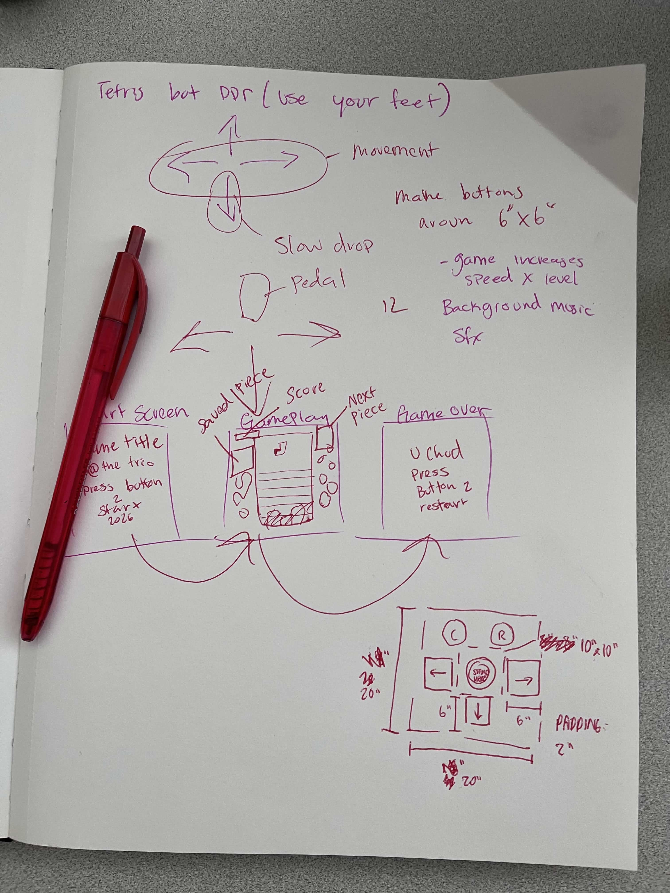
we chose a monochrome color palette, to match our
game's physical interface (aluminum foil/black cardstock).
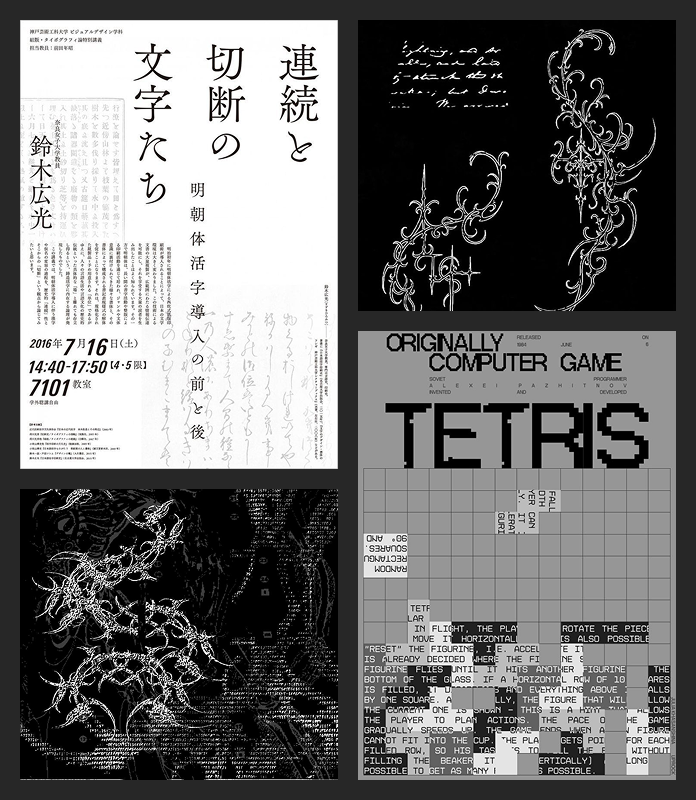
kong means null or nothingness, while ji describes
accumulation. together, it has a double meaning- where
you accumulate lines, then they disappear to nothingness.
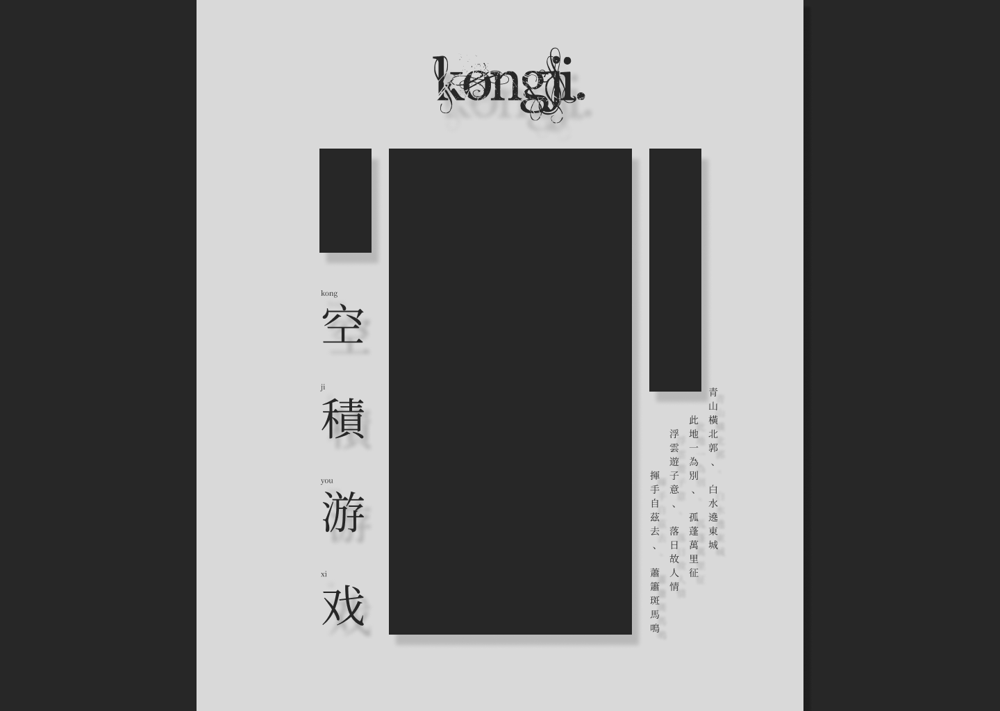
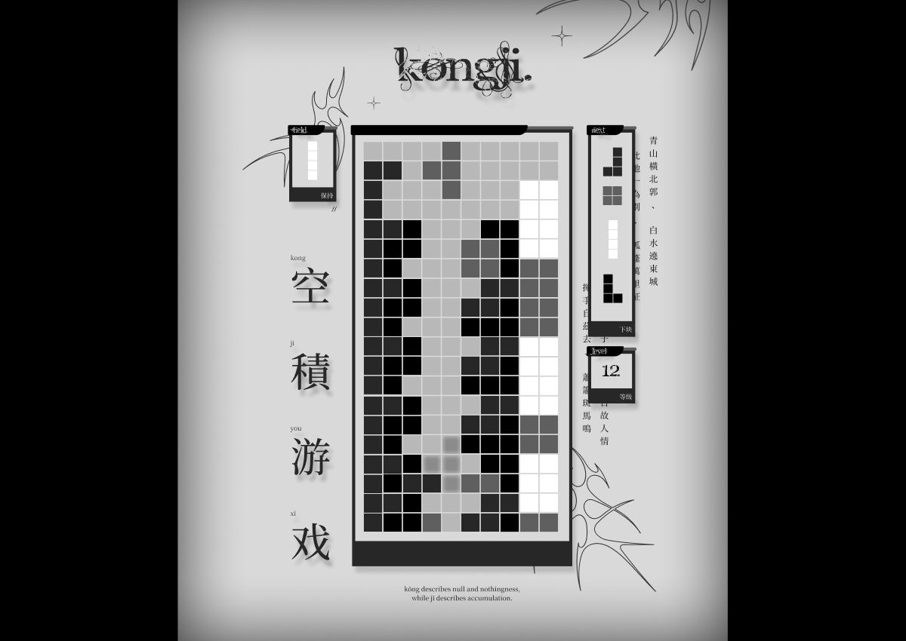
for loops are used to create the grid system and 2D
arrays are used to make the grid functional.
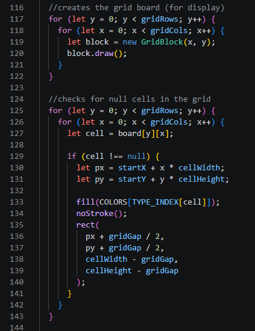
arrays are used to store the randomized bag of pieces.
constants are used to define each tetris piece and it's
coordinates. classes are made for each tetris block as well.
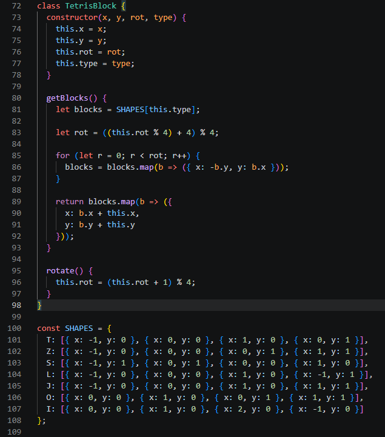
point system that increases based on lines cleared and
how many lines you've cleared in succession (combo). this
also affects the level and gravity.
floor() is a p5 function that rounds down to the nearest
integer. this is useful so we don't have any decimal points.
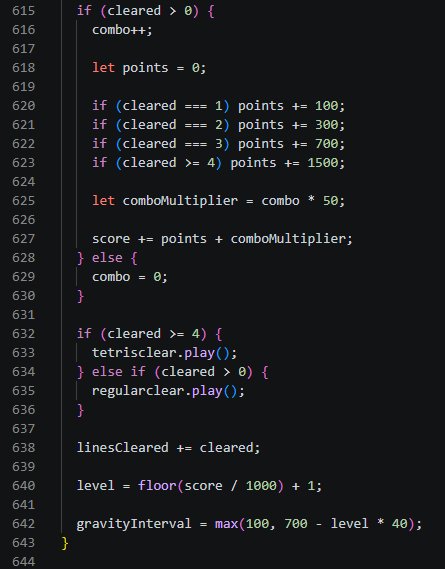
custom function to check for collision for blocks. if it
detects a collision, the return function makes it so that the
remaining code does not run.
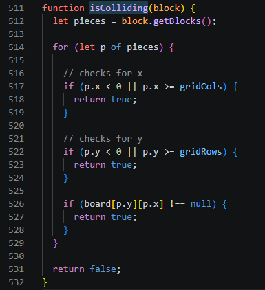
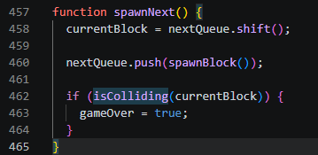
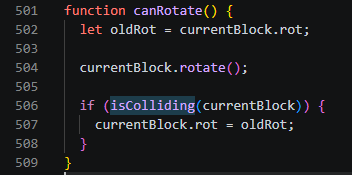
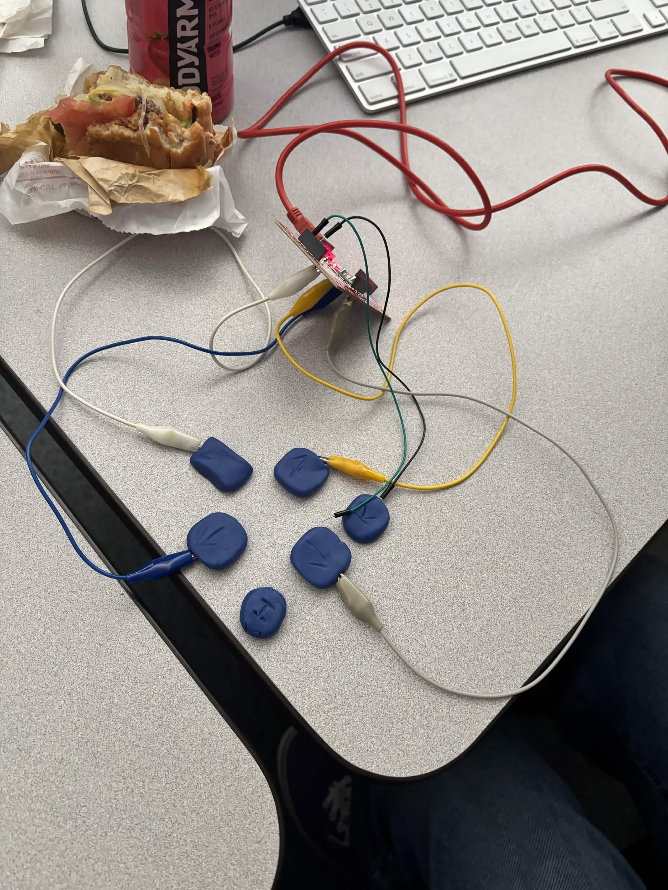
we decided to change the up arrow into the logo (to start
the game) and move the hold/rotate buttons to the top.
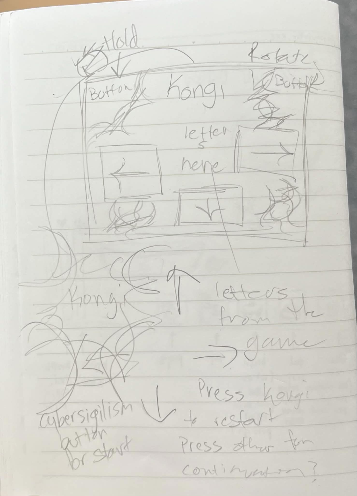
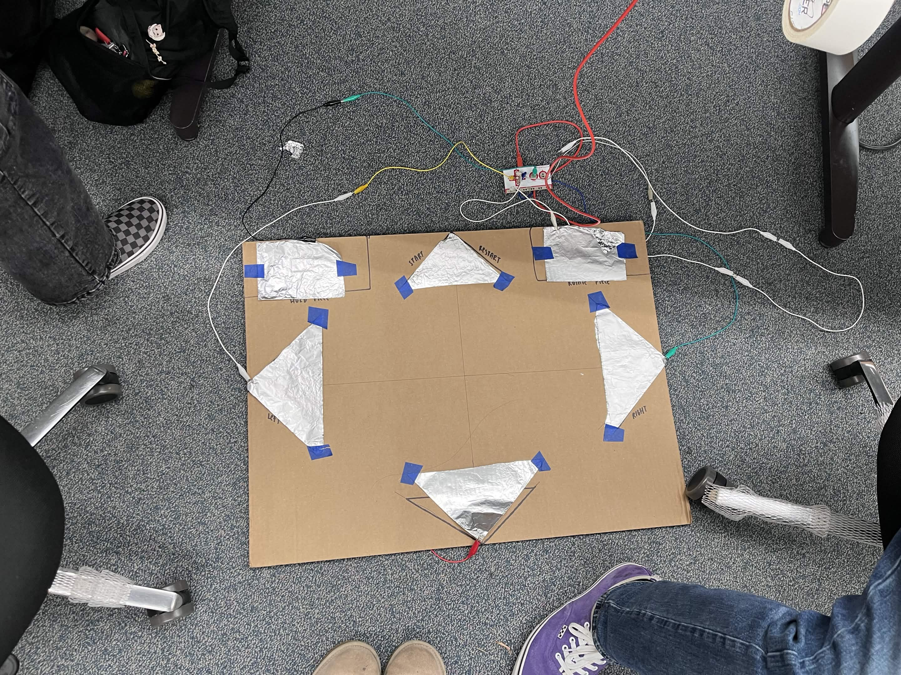
lis created sturdier buttons by wrapping the foil around
cardboard. extra details were cut out and glued on.
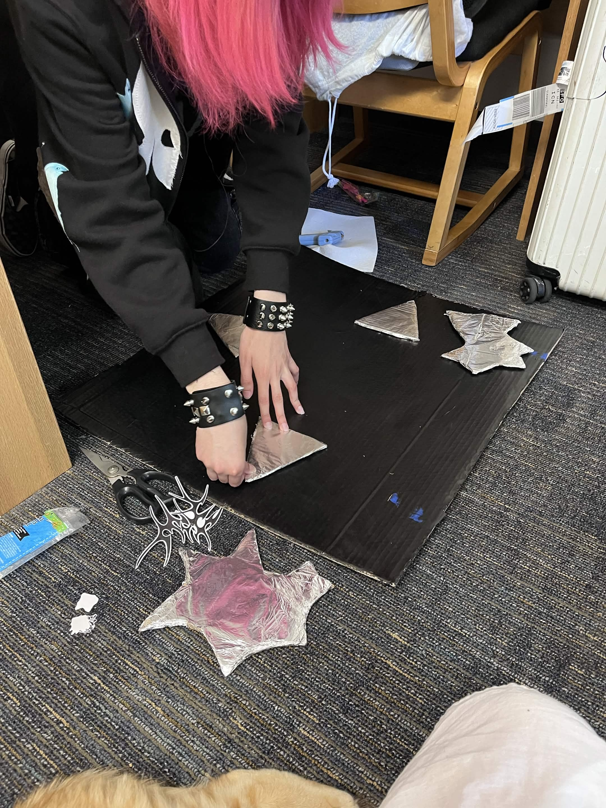
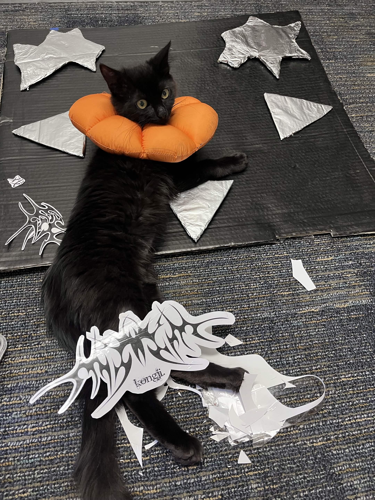
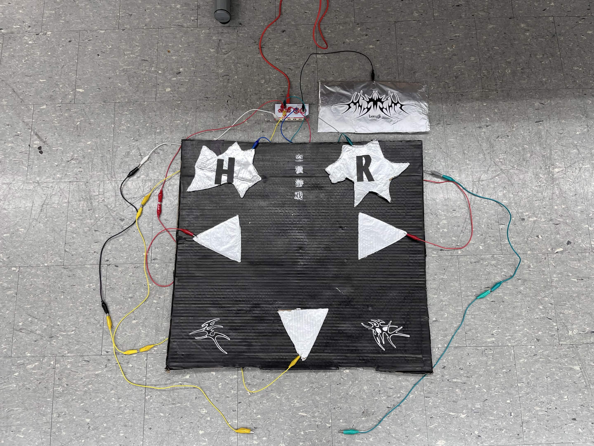
tennie: lead programmer, lead interaction designer,
assistant fabrication/artist
game programming, game ui, website hosting/ui, makeymakey
utilization
lis: lead fabrication/artist, assistant interaction designer
physical layout creation, game design
marek: assistant programmer
game programming
aesthetic choices were heavily inspired by cybersigilism.
this style, which originated in berlin's underground techno
and queer club scenes during the late 2010s, is credited to
tattoo artist aingel blood.
font angelic war on dafont.com is free for personal use.
designed using figma and created using p5.js.
vectors are from adobe stock and are for personal use only.